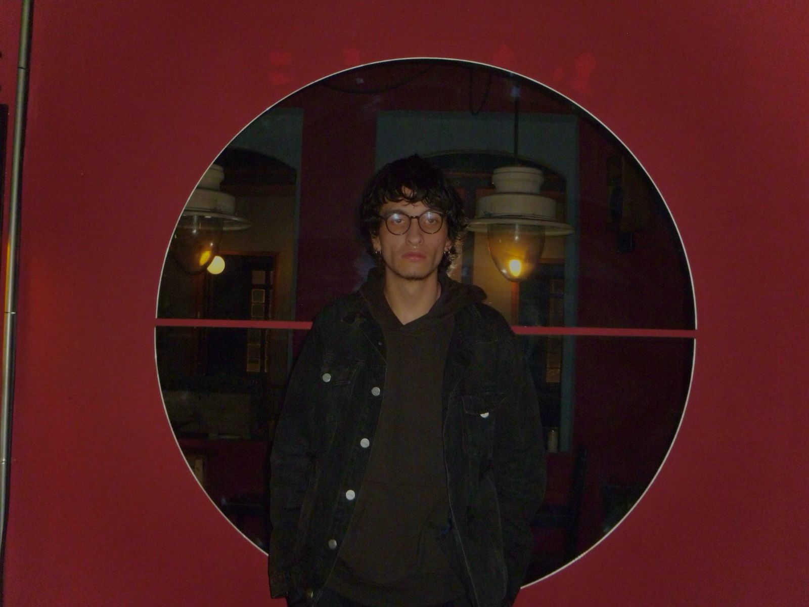
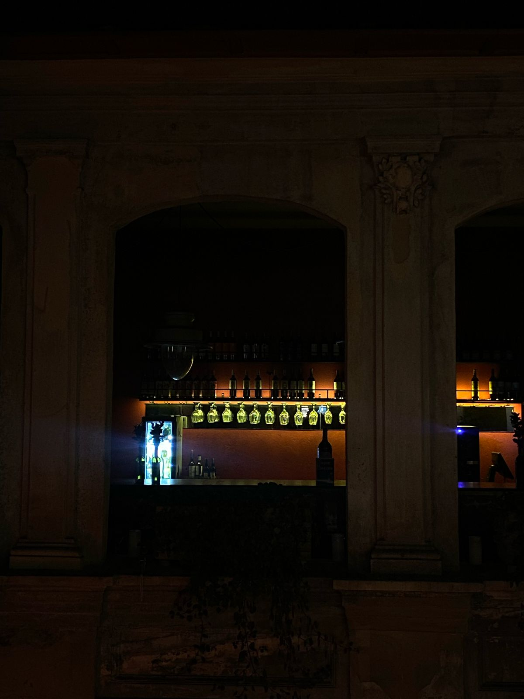

Monachopsis es un término poco común que describe la sensación sutil pero persistente de no encajar del todo en el entorno. No es necesariamente una alienación completa, sino una ligera incomodidad, como si estuvieras fuera de sintonía con el mundo que te rodea.
No es un término oficial en psicología, sino una palabra popularizada por The Dictionary of Obscure Sorrows, un proyecto que inventa palabras para describir emociones complejas que no tienen una expresión exacta en el lenguaje común.